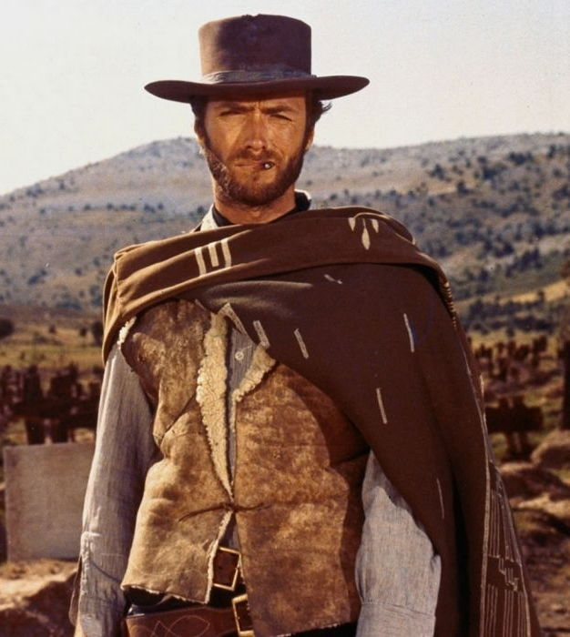

The Bad Old Days (circa 1990)

Previous Test Problem Sources
- Papers in JAR, CADE, etc
- Personal and research groups' electronic collections
Weaknesses of Previously Existing Collections
- Limited in availability, scope, size, and usability
- Tuned for a particular ATP system
- Of unknown significance and difficulty
- Unable to unambiguously identify problems
- Unserviced
- Used in an uncontrolled fashion